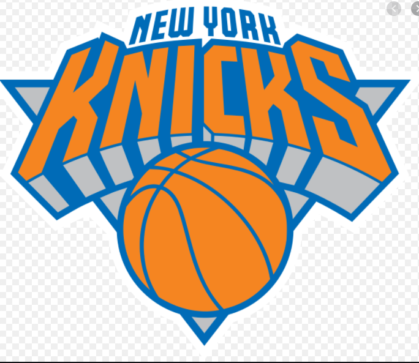
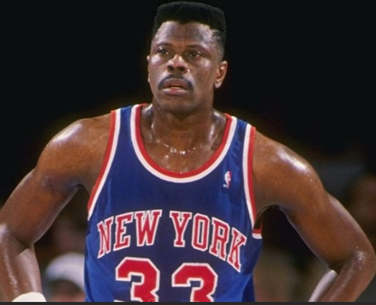

Knicks
The New York Knickerbockers, more commonly referred to as the New York Knicks, are an American professional basketball team based in the New York City borough of Manhattan. The Knicks compete in the National Basketball Association (NBA) as a member of the Atlantic Division of the Eastern Conference. The team plays its home games at Madison Square Garden, an arena they share with the New York Rangers of the National Hockey League (NHL). They are one of two NBA teams located in New York City; the other team is the Brooklyn Nets. Alongside the Boston Celtics, the Knicks are one of two original NBA teams still located in its original city.
The team, established by Ned Irish in 1946, was one of the founding members of the Basketball Association of America (BAA), which became the NBA after merging with the rival National Basketball League (NBL) in 1949. The Knicks were successful during their early years and were constant playoff contenders under the franchise's first head coach Joe Lapchick. Beginning in 1950, the Knicks made three consecutive appearances in the NBA Finals, all of which were losing efforts. Lapchick resigned in 1956 and the team subsequently began to falter.
It was not until the late 1960s when Red Holzman became the head coach that the Knicks began to regain their former dominance. Holzman successfully guided the Knicks to two NBA championships, in 1970 and 1973. The Knicks of the 1980s had mixed success that included six playoff appearances; however, they failed to participate in the NBA Finals.
The playoff-level Knicks of the 1990s were led by future Hall of Fame center Patrick Ewing; this era was marked by passionate rivalries with the Chicago Bulls, Indiana Pacers, and Miami Heat. During this time, they were known for playing tough defense under head coaches Pat Riley and Jeff Van Gundy, making NBA Finals appearances in 1994 and 1999. However, they were unable to win an NBA championship during this era.
Since 2000, the Knicks have struggled to regain their former successes, but won their first division title in 19 years in 2012–13, led by a core of forwards Carmelo Anthony and Amar'e Stoudemire. They were eventually eliminated in the Eastern Conference semifinals by the Indiana Pacers, and have failed to make the playoffs since.
Patrick Aloysius Ewing (born August 5, 1962) is a Jamaican-American basketball coach and former professional player who is the head coach of the Georgetown University men's team. He played most of his career as the starting center for the New York Knicks of the National Basketball Association (NBA) before ending his playing career with brief stints with the Seattle SuperSonics and Orlando Magic. Ewing played center for Georgetown for four years—in three of which the team reached the NCAA Championship Game. ESPN in 2008 designated him the 16th-greatest college basketball player of all time. He had a seventeen-year NBA career, predominantly playing for the New York Knicks, where he was an eleven-time all-star and named to seven All-NBA teams. The Knicks appeared in the NBA Finals twice (1994 and 1999) during his tenure. He won Olympic gold medals as a member of the 1984 and 1992 United States men's Olympic basketball teams. In a 1996 poll celebrating the 50th anniversary of the NBA, Ewing was selected as one of the 50 Greatest Players in NBA History. He is a two-time inductee into the Basketball Hall of Fame in Springfield, Massachusetts (in 2008 for his individual career, and in 2010 as a member of the 1992 Olympic team). Additionally he was inducted into the U.S. Olympic Hall of Fame as a member of the "Dream Team" in 2009. His number 33 was retired by the Knicks in 2003.
 Julius Deion Randle (born November 29, 1994) is an American professional basketball player for the New York Knicks of the National Basketball Association (NBA). In his only season of college basketball with the Kentucky Wildcats, he was named a third-team All-American. He was drafted by the Los Angeles Lakers in the first round of the 2014 NBA draft with the seventh overall pick. In his regular-season debut, Randle broke his right leg and missed the remainder of his rookie season. After four years with the Lakers, he signed with the New Orleans Pelicans. He averaged a career-high 21.4 points per game in 2018–19, his only season with the Pelicans, before reaching a deal to join the Knicks.
Julius Deion Randle (born November 29, 1994) is an American professional basketball player for the New York Knicks of the National Basketball Association (NBA). In his only season of college basketball with the Kentucky Wildcats, he was named a third-team All-American. He was drafted by the Los Angeles Lakers in the first round of the 2014 NBA draft with the seventh overall pick. In his regular-season debut, Randle broke his right leg and missed the remainder of his rookie season. After four years with the Lakers, he signed with the New Orleans Pelicans. He averaged a career-high 21.4 points per game in 2018–19, his only season with the Pelicans, before reaching a deal to join the Knicks.